Modern Italian plugs and sockets
BTicino "Oval" socket
Rating: 16A 250V
The BTicino Oval series is a series of compact surface-mount electrical accessories, with a distinctive oval design. They're especially interesting since they're one of the very few accessories sold in Italy nowadays to not be modular.
The socket opens toollessly, by unclipping the front cover; two screws are provided for mounting. The shell has several spots where holes can be punched out to feed the supply wires; unfortunately, due to the small size of the socket, not much space is present on the inside, which may make installation harder.
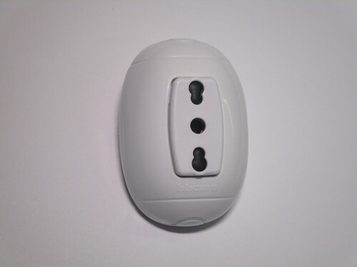 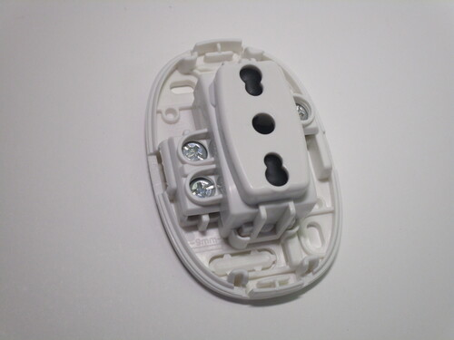 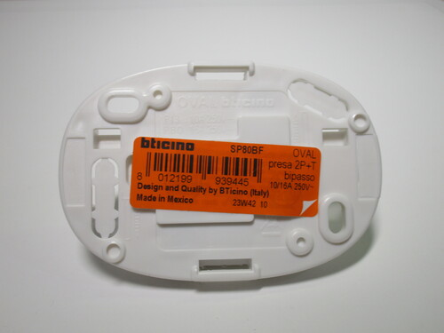{kind=link}
{kind=link}
{kind=link}
Multi-way adaptor with switch
Rating: 1500W 250V
This multi-way adaptor has two 10/16A sockets and one Schuko one, also compatible with 10A plugs. While adaptors of this style are quite common, this one is special as it features a power switch. Adaptors with switches could be useful for items without a power switch, such as holiday lights.
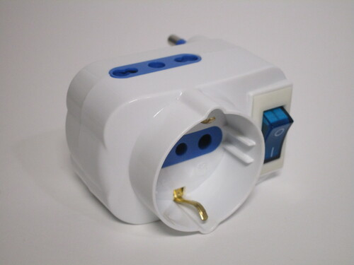 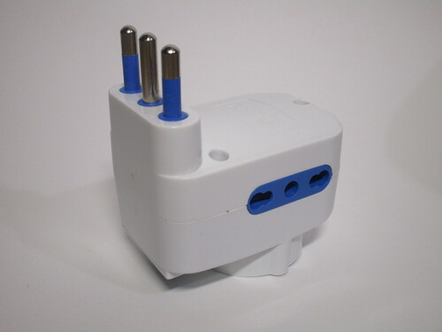 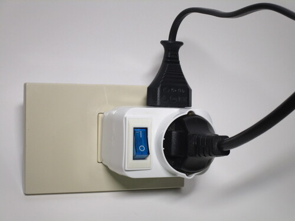{kind=link}
{kind=link}
{kind=link}
Adaptor with built-in thermal fuse
Rating: 1500W 250V
As adaptors to convert a 10A socket into a 16A one aren't able to be sold anymore, ones with built-in breakers have started being made. This is an example of one, which is quite unusual as it makes use of a thermal fuse rather than a breaker.
A label on the side indicates that, if the overload protection were to trip, the adaptor is to be disconnected for three minutes.
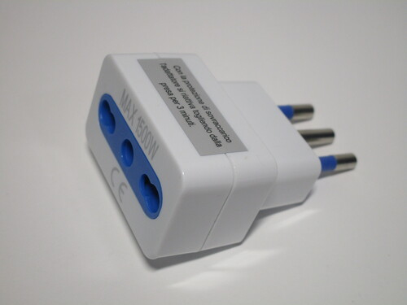 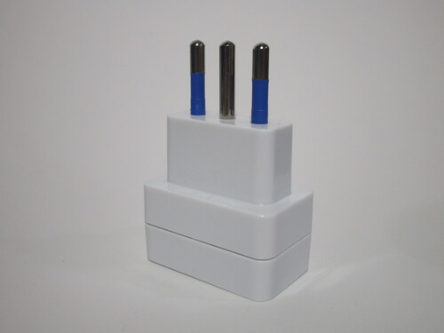{kind=link}
{kind=link}

Classic Bipasso power strip
Rating:
This is a classic Italian power strip, with four Bipasso power sockets. Power strips of this style have become less common, in favour of ones with Schuko sockets, which can be used with more devices without requiring the use of adaptors.
Despite this, they continue to be sold by several brands, as they take up significantly less space than one with an equivalent amount of Schuko sockets. This can be a significant advantage, especially when only using Europlugs or 10A Italian plugs.
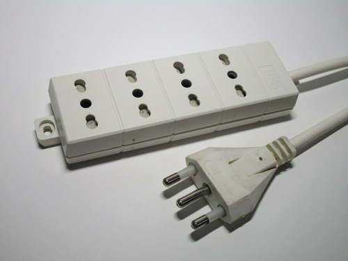 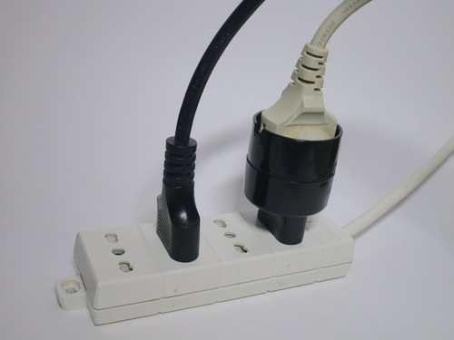 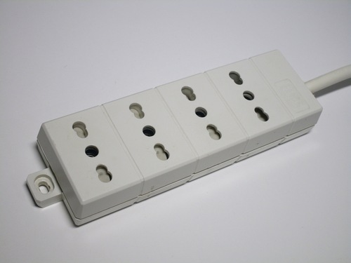{kind=link}
{kind=link}
{kind=link}